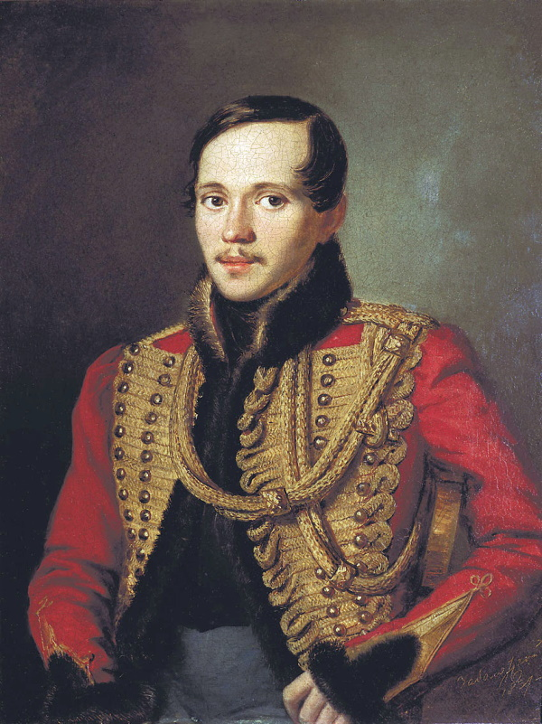

Михаи́л Ю́рьевич Ле́рмонтов[9] (3 [15] октября 1814, Москва — 15 [27] июля 1841, Пятигорск) —
русский поэт, прозаик, драматург, художник. Поручик лейб-гвардии Гусарского полка. Творчество
Лермонтова, в котором сочетаются гражданские, философские и личные мотивы, отвечавшие насущным
потребностям духовной жизни русского общества, ознаменовало собой новый расцвет русской литературы и
оказало большое влияние на виднейших русских писателей и поэтов XIX и XX веков. Произведения Лермонтова
получили большой отклик в живописи, театре, кинематографе. Его стихи стали подлинным кладезем для
оперного, симфонического и романсового творчества. Многие из них стали народными песнями[10].